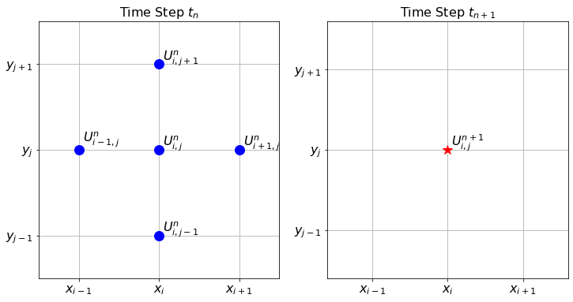

Appendix B — Exam solutions
In this appendix you find example solutions to the exam-style questions.
B.1 Numbers
(a) Machine Precision
Machine precision is the gap between the number 1 and the next larger floating point number. With 4 bits for the mantissa, the smallest number greater than \(1\) that can be represented is \(1.0001_2\). So machine precision is \(\epsilon = 0.0001_2=1/16\). The relative rounding error can never be larger than \(\epsilon/2\).
(b) Conversion of 13.5
- Sign: Positive (\(+13.5\)), so \(s=0\).
- Convert \(13.5\) to binary:
- \(13_{10} = 1101_2\).
- \(0.5_{10} = 0.1_2\).
- Result: \(1101.1_2\).
- Normalize: \(1.1011 \times 2^3\).
- Exponent (\(E=3\)):
- Stored exponent \(e = E + 3 = 3 + 3 = 6\).
- \(6_{10} = 110_2\).
- Mantissa (\(m\)): Drop the leading 1 \(\rightarrow\)
1011. - Final Bit Pattern:
0 110 1011.
(c) Addition: 13.5 + 0.25
Convert second number (0.25):
- \(0.25 = 1/4 = 1.0 \times 2^{-2}\).
Align Exponents:
- \(x_1 = 1.1011 \times 2^3\)
- \(x_2 = 1.0000 \times 2^{-2}\)
- Shift \(x_2\) to match exponent \(3\): Shift right by \(3 - (-2) = 5\) positions.
- \(x_2 \rightarrow 0.00001 \times 2^3\).
Add Significands:
1.1011 (13.5) + 0.00001 (0.25 aligned) ----------- 1.10111Rounding:
- The result \(1.10111_2\) has 5 fractional bits, but we can only store 4.
- It lies exactly halfway between \(1.1011\) (\(13.5\)) and \(1.1100\) (\(14.0\)).
- Tie-breaking rule: “Ties to Even”.
- The Least Significant Bit (4th bit) is
1(odd). To make it even, we round up (add 1 to the LSB). - \(1.1011 + 0.0001 = 1.1100\).
Final Result:
- Significand: \(1.1100\)
- Value: \(1.1100_2 \times 2^3 = 1110.0_2 = \mathbf{14.0}\).
Error:
- Exact sum: \(13.75\).
- Stored sum: \(14.0\).
- Absolute Error: \(|13.75 - 14.0| = \mathbf{0.25}\).
(d) Loss of Significance
- Error Type: Catastrophic Cancellation (or Loss of Significant Digits).
- Explanation: When \(x\) is very large (\(10^8\)), \(x^2 + 1 \approx x^2\), so \(\sqrt{x^2+1} \approx x\). Subtracting two extremely close numbers causes the cancellation of the leading digits, leaving only the random “noise” from the least significant bits.
- Improved (Stable) Formula: Multiply by the conjugate: \[f(x) = \frac{(\sqrt{x^2+1} - x)(\sqrt{x^2+1} + x)}{\sqrt{x^2+1} + x} = \frac{1}{\sqrt{x^2+1} + x}.\]
B.2 Functions
(a) Missing \(x^2\) term
The coefficient for the \(x^2\) term in the Taylor Series expansion around \(x_0 = 0\) is given by \(\frac{f''(0)}{2!}\). For \(f(x) = \sin(x)\), the second derivative is \(f''(x) = -\sin(x)\). Evaluating this at \(x=0\) yields \(f''(0) = -\sin(0) = 0\). Hence, the coefficient is 0. Alternatively, one could note that \(\sin(x)\) is an odd function, so its Taylor series only contains odd powers of \(x\).
(b) Python Code
import math
def sin_taylor(x, n):
"""
Calculate the Taylor expansion for f(x) = sin(x) centred at x_0 = 0 up to order n.
"""
term = x / 1
result = term
for i in range(3, n + 1, 2):
term = -term * x**2 / (i * (i-1))
result += term
return result(Other valid implementations, such as computing terms from scratch using math.factorial or checking if i % 2 != 0 within a regular loop, are also acceptable).
(c) Truncation Error
- i) If we truncate the series after the \(x^3\) term, the next term in the mathematical Taylor series is the \(x^5\) term (since the \(x^4\) term is 0). Therefore, the truncation error is \(\mathcal{O}(x^5)\).
- ii) Evaluating the function at \(x = 0.05\) instead of \(x = 0.1\) reduces \(x\) by a factor of \(1/2\). Because the error scales as \(\mathcal{O}(x^5)\), the truncation error is expected to decrease by a factor of \((1/2)^5 = \mathbf{1/32}\).
B.3 Roots 1
(a) Conditions for Bisection Method Convergence
- The function \(f\) must be continuous on the closed interval \([a, b]\).
- The function values at the endpoints must have opposite signs, i.e., \(f(a) \cdot f(b) < 0\).
(b) Number of Iterations
- The error after \(n\) iterations is bounded by \(\frac{|b-a|}{2^n} = \frac{1}{2^n}\).
- We need \(\frac{1}{2^n} \le 2^{-20}\). Therefore, \(n = 20\) iterations are required.
(c) Three Iterations of Bisection Method
- Iteration 1:
- Interval: \([a, b] = [1, 2]\).
- Midpoint \(m_1 = 1.5\).
- Iteration 2:
- From the graph, \(f(1.5)\) is slightly below the x-axis, so \(f(1.5) < 0\).
- Since \(f(1.5) < 0\) and \(f(2) > 0\), the root must lie in the new interval \([1.5, 2]\).
- Midpoint \(m_2 = \frac{1.5 + 2}{2} = 1.75\).
- Iteration 3:
- From the graph, at \(x=1.75\), the function curve is clearly above the x-axis, so \(f(1.75) > 0\).
- Since \(f(1.5) < 0\) and \(f(1.75) > 0\), the narrower interval containing the root is \([1.5, 1.75]\).
- Midpoint \(m_3 = \frac{1.5 + 1.75}{2} = 1.625\).
(d) Fixed-Point Iteration
i) Convergence check:
- \(g(x) = (x+2)^{1/3}\)
- \(g'(x) = \frac{1}{3}(x+2)^{-2/3}\).
- For \(x \in [1, 2]\), the denominator is positive and increasing.
- The maximum of \(|g'(x)|\) on this interval occurs at \(x = 1\), where \(g'(1) = \frac{1}{3(3)^{2/3}}\).
- Since \(|g'(x)| < 1\) for all \(x \in [1, 2]\) and \(g(x) \in [1, 2]\) on this interval (as \(g(1) \approx 1.44\) and \(g(2) \approx 1.58\)), the Fixed-Point Theorem guarantees convergence for any \(x_0 \in [1, 2]\).
ii) Code:
def fixed_point_iteration(): x = 1.0 for i in range(10): x = (x + 2)**(1/3) return x
B.4 Roots 2
(a) Secant Method vs Newton’s Method
- Explanation: The Secant method replaces the exact derivative \(f'(x_n)\) in Newton’s iteration formula with a finite difference approximation (the slope of the secant line) using the two previous iterates: \(f'(x_n) \approx \frac{f(x_n) - f(x_{n-1})}{x_n - x_{n-1}}\).
- Advantage: It does not require an explicit formula for the derivative of the function, which is useful if the derivative is difficult or computationally expensive to evaluate.
- Disadvantage: It has a lower order of convergence (superlinear, \(\alpha \approx 1.62\)) compared to Newton’s method (quadratic, \(\alpha = 2\)), so it may require more iterations to achieve the same accuracy. It also requires two initial guesses instead of one.
(b) Order of Convergence
- Definition: A sequence \(\{x_n\}\) converging to \(p\) (with \(x_n \neq p\)) has an order of convergence \(\alpha \ge 1\) if there exists a constant \(\lambda > 0\) such that \(\lim_{n \to \infty} \frac{|x_{n+1}-p|}{|x_n - p|^\alpha} = \lambda\).
- Orders of convergence:
- Bisection Method: 1 (Linear)
- Secant Method: \(\frac{1+\sqrt{5}}{2} \approx 1.618\) (Superlinear)
- Newton’s Method: 2 (Quadratic)
(c) Applying the Methods to \(f(x) = x^2 - 5\)
- i) Newton’s method:
- \(f(x) = x^2 - 5 \implies f'(x) = 2x\).
- Formula: \(x_{n+1} = x_n - \frac{f(x_n)}{f'(x_n)}\).
- \(x_0 = 2\).
- \(f(2) = 2^2 - 5 = -1\).
- \(f'(2) = 2(2) = 4\).
- \(x_1 = 2 - \frac{-1}{4} = 2.25\).
- ii) Secant method:
- Formula: \(x_{n+1} = x_n - \frac{f(x_n)(x_n - x_{n-1})}{f(x_n) - f(x_{n-1})}\).
- \(x_0 = 3, f(x_0) = 3^2 - 5 = 4\).
- \(x_1 = 2, f(x_1) = 2^2 - 5 = -1\).
- \(x_2 = 2 - \frac{(-1)(2 - 3)}{(-1) - 4} = 2 - \frac{(-1)(-1)}{-5} = 2 - \frac{1}{-5} = 2.2\).
(d) Error Estimation
- Given \(E_{n+1} \approx E_n^2\).
- \(E_3 \approx E_2^2 = (10^{-3})^2 = 10^{-6}\).
- \(E_4 \approx E_3^2 = (10^{-6})^2 = 10^{-12}\).
- The expected error \(E_4\) is roughly \(10^{-12}\).
(e) Order of Convergence for Newton’s Method
- Newton’s method is defined by \(x_{n+1} = g(x_n)\) where \(g(x) = x - \frac{f(x)}{f'(x)}\).
- To find the order of convergence, we evaluate the derivatives of \(g(x)\) at the root \(p\).
- First derivative: \(g'(x) = 1 - \frac{f'(x)f'(x) - f(x)f''(x)}{[f'(x)]^2} = \frac{[f'(x)]^2 - [f'(x)]^2 + f(x)f''(x)}{[f'(x)]^2} = \frac{f(x)f''(x)}{[f'(x)]^2}\).
- Evaluate \(g'(x)\) at \(p\): since \(p\) is a root, \(f(p) = 0\). Since it is a simple root, \(f'(p) \neq 0\). Thus, \(g'(p) = \frac{f(p)f''(p)}{[f'(p)]^2} = \frac{0 \cdot f''(p)}{[f'(p)]^2} = 0\).
- According to the theorem on the order of convergence for fixed-point iterations, if \(g(p) = p\) and \(g'(p) = 0\), but \(g''(p) \neq 0\) (which is generally true unless \(f''(p)=0\)), the sequence has an order of convergence of \(m=2\) (quadratic convergence).
B.5 Calculus
(a) Difference Formulas and Accuracies
- Forward difference: \(f'(x) \approx \frac{f(x+h) - f(x)}{h}\). Order of accuracy: \(\mathcal{O}(h)\) (first order).
- Central difference: \(f'(x) \approx \frac{f(x+h) - f(x-h)}{2h}\). Order of accuracy: \(\mathcal{O}(h^2)\) (second order).
(b) Derivation of Central Difference
- Taylor series:
- \(f(x+h) = f(x) + hf'(x) + \frac{h^2}{2}f''(x) + \frac{h^3}{6}f'''(x) + \mathcal{O}(h^4)\)
- \(f(x-h) = f(x) - hf'(x) + \frac{h^2}{2}f''(x) - \frac{h^3}{6}f'''(x) + \mathcal{O}(h^4)\)
- Subtracting the second equation from the first: \(f(x+h) - f(x-h) = 2hf'(x) + \frac{2h^3}{6}f'''(x) + \mathcal{O}(h^5)\)
- Solving for \(f'(x)\): \(2hf'(x) = f(x+h) - f(x-h) - \frac{h^3}{3}f'''(x) + \mathcal{O}(h^5)\) \(f'(x) = \frac{f(x+h) - f(x-h)}{2h} - \frac{h^2}{6}f'''(x) + \mathcal{O}(h^4)\)
- Since the leading error term is proportional to \(h^2\), the truncation error is \(\mathcal{O}(h^2)\).
(c) Error Reduction for Central Difference
- The central difference scheme is \(\mathcal{O}(h^2)\), meaning the error is proportional to \(h^2\).
- Reducing the step size from \(h=0.2\) to \(h=0.05\) means we are dividing the step size by a factor of 4.
- Because the error scales quadratically, the new error should be reduced by a factor of \(4^2 = 16\).
- Therefore, the expected new absolute error is approximately \(0.016 / 16 = 0.001\).
(d) Trapezoidal Rule Graph
- A sketch should show the curve \(y=f(x)\) over an interval, partitioned into subintervals, with straight line segments connecting the function values \((x_i, f(x_i))\) and \((x_{i+1}, f(x_{i+1}))\), forming trapezoids whose combined areas approximate the precise area under the curve.
(e) Trapezoidal Rule Value
- The function \(f(x) = 5x+3\) is a linear function. The trapezoidal rule approximates the area under a curve using straight line segments. For a linear function, the tops of the trapezoids perfectly match the graph of the function.
- Therefore, the trapezoidal rule evaluates the integral exactly, independently of the number of subintervals.
- The exact integral is \(\int_0^5 (5x+3) dx = \left[\frac{5}{2}x^2 + 3x\right]_0^5 = \frac{5}{2}(25) + 3(5) = 62.5 + 15 = 77.5\).
- (Alternatively, using a geometric argument: treat the entire interval \([0,5]\) as a single trapezoid with vertices at \((0,f(0))\) and \((5,f(5))\), giving \(\frac{f(0)+f(5)}{2} \times 5 = \frac{3 + 28}{2} \times 5 = 15.5 \times 5 = 77.5\). This works because for a linear function the composite trapezoidal rule with any number of subintervals gives the same exact answer.).
(f) Order of Accuracy of Trapezoidal Rule
- The order of accuracy for the global trapezoidal rule is \(\mathcal{O}(h^2)\) (second order).
- This means that the approximation error is proportional to the square of the step size \(h\). Doubling the number of subintervals halves the step size (\(h \to h/2\)), so the approximation error will decrease by a factor of \(2^2 = 4\) (it will become one-quarter of its previous value).
(g) Trapezoidal Python Code
x = np.linspace(a, b, N+1)
dx = x[1] - x[0]
A = (f(x[:-1]) + f(x[1:])) / 2 * dx
return np.sum(A)B.6 Optimisation
(a) Golden Section Search
- Logic: The Golden Section Search is a bracketing method that iteratively narrows down an interval known to contain a local minimum. It selects a new test point within the current bracket and, based on the function values, replaces one of the bracketing endpoints to create a smaller interval that is still guaranteed to bracket the minimum.
- Condition: For the triplet \((a, c, b)\) with \(a < c < b\) to bracket a minimum, the function value at the interior point \(c\) must be strictly less than the function values at the endpoints \(a\) and \(b\) (i.e. \(f(c) < f(a)\) and \(f(c) < f(b)\)).
(b) Gradient Descent \(\alpha\) Parameter
- Role: The parameter \(\alpha\) (learning rate) controls the size of the steps taken in the direction of the negative gradient.
- Too large: If \(\alpha\) is too large, the algorithm acts unstably and may repeatedly step past the minimum point, overshooting and potentially diverging from the minimum.
- Too small: If \(\alpha\) is too small, the algorithm will confidently move toward the minimum but will require many iterations to arrive, leading to an extremely slow convergence process.
(c) Multivariable Gradient Descent
- Iteration formula: \(\boldsymbol{x}_{n+1} = \boldsymbol{x}_n - \alpha \nabla f(\boldsymbol{x}_n)\).
- Geometric rationale: The gradient vector \(\nabla f(\boldsymbol{x})\) points in the direction of the steepest ascent of the function at the point \(\boldsymbol{x}\). Therefore, the negative gradient \(-\nabla f(\boldsymbol{x})\) points directly downhill in the direction of steepest descent. Moving a small distance in this direction represents the optimal path to decrease the function’s value to find a local minimum.
(d) Gradient Descent Code
grad = df(x)
x = x - alpha * gradB.7 ODE 1
(a) Numerical Instability
- Definition: Numerical instability occurs when the errors in the numerical approximation grow exponentially as the computation proceeds.
- Result: The numerical solution diverges rapidly from the exact solution, yielding meaningless results.
- Avoidance: It can typically be avoided by choosing a step size \(h\) (or \(\Delta t\)) that is smaller than some critical threshold value, or by using an implicit method instead.
(b) Euler’s Method
- Differential equation: \(x' = -2x + t\), \(x(0) = 1\), \(h=0.5\).
- Formula: \(x_1 = x_0 + h f(t_0, x_0)\).
- \(t_0 = 0\), \(x_0 = 1\).
- \(f(0, 1) = -2(1) + 0 = -2\).
- \(x_1 = 1 + 0.5(-2) = 1 - 1 = 0\).
(c) Midpoint Method
- \(m_0 = f(t_0, x_0) = -2\).
- \(t_{1/2} = t_0 + h/2 = 0 + 0.25 = 0.25\).
- \(x_{1/2} = x_0 + (h/2) m_0 = 1 + 0.25(-2) = 0.5\).
- \(m_{1/2} = f(t_{1/2}, x_{1/2}) = -2(0.5) + 0.25 = -0.75\).
- \(x_1 = x_0 + h m_{1/2} = 1 + 0.5(-0.75) = 1 - 0.375 = 0.625\).
(d) System of First-Order ODEs
- Let \(\theta = \theta\) and \(\omega = d\theta/dt\). Then:
- \(\dfrac{d\theta}{dt} = \omega\)
- \(\dfrac{d\omega}{dt} = -\dfrac{g}{L}\sin(\theta)\)
(e) Midpoint Method Python Code
slope = f(t[n], x[n])
x_halfstep = x[n] + (dt / 2) * slope
x[n+1] = x[n] + dt * f(t[n] + dt / 2, x_halfstep)B.8 ODE 2
(a) Explicit vs Implicit Euler
- Geometric Difference: The explicit (forward) Euler method estimates the next spatial/temporal point by using the derivative evaluated at the current known point \((t_n, x_n)\). The implicit (backward) Euler method, conversely, evaluates the derivative at the unknown future point \((t_{n+1}, x_{n+1})\).
- Stiff Equations: Backward Euler is unconditionally stable for stable linear equations (its region of absolute stability is the entire left half-plane). Thus it avoids numerical instability when simulating stiff equations where transients would otherwise force explicit methods to use impractically small step sizes.
(b) Unconditional Stability of Backward Euler
Apply the backward Euler method to \(x' = \lambda x\): \[x_{n+1} = x_n + h\lambda x_{n+1}.\] Solving for \(x_{n+1}\): \[x_{n+1}(1 - h\lambda) = x_n \implies x_{n+1} = \frac{1}{1 - h\lambda}\, x_n.\] The amplification factor is \(R = \frac{1}{1 - h\lambda}\). For \(\text{Re}(\lambda) < 0\) and any \(h > 0\), writing \(\lambda = a + bi\) with \(a < 0\): \[|1 - h\lambda|^2 = (1 - ha)^2 + (hb)^2 > 1,\] since \(1 - ha > 1\) (as \(a < 0\)). Therefore \(|R| < 1\) for all \(h > 0\), so \(|x_n| \to 0\) as \(n \to \infty\), and the method is unconditionally stable.
(c) Local Truncation Error of Backward Euler
The local truncation error is defined as the residual when the exact solution is substituted into the numerical scheme: \[\tau_n =\frac{1}{h}|x(t_{n+1})-x_{n+1}|= \left|\frac{x(t_{n+1}) - x(t_n)}{h} - f\!\left(t_{n+1},\, x(t_{n+1})\right)\right|.\] Taylor-expanding \(x(t_{n+1})\) about \(t_n\): \[x(t_{n+1}) = x(t_n) + h\,x'(t_n) + \frac{h^2}{2}x''(t_n) + \mathcal{O}(h^3),\] so \[\frac{x(t_{n+1}) - x(t_n)}{h} = x'(t_n) + \frac{h}{2}x''(t_n) + \mathcal{O}(h^2).\] Since \(f(t_{n+1}, x(t_{n+1})) = x'(t_{n+1})\), Taylor-expanding \(x'\) gives: \[x'(t_{n+1}) = x'(t_n) + h\,x''(t_n) + \mathcal{O}(h^2).\] Substituting: \[\tau_n = \left| x'(t_n) + \frac{h}{2}x''(t_n) - x'(t_n) - h\,x''(t_n)\right| + \mathcal{O}(h^2) = \frac{h}{2}|x''(t_n)| + \mathcal{O}(h^2) = \mathcal{O}(h).\]
(d) Runge-Kutta 4
- Order of Accuracy: \(\mathcal{O}(h^4)\) (Fourth order).
- Function Evaluations: 4 evaluations of \(f(t,x)\) are required at each time step.
B.9 PDE 1
(a) Finite Difference Scheme for 1D Heat Equation
- Forward difference in time: \(u_t \approx \frac{U_i^{n+1} - U_i^n}{\Delta t}\).
- Centred difference in space: \(u_{xx} \approx \frac{U_{i+1}^n - 2U_i^n + U_{i-1}^n}{\Delta x^2}\).
- Substitute into equation: \(\frac{U_i^{n+1} - U_i^n}{\Delta t} = D \frac{U_{i+1}^n - 2U_i^n + U_{i-1}^n}{\Delta x^2}\).
- Solve for \(U_i^{n+1}\): \(U_i^{n+1} = U_i^n + D \frac{\Delta t}{\Delta x^2}\left(U_{i+1}^n - 2U_i^n + U_{i-1}^n\right)\).
(b) Truncation Errors and Overall Order
- Truncation error for \(u_t\) approximation is \(\mathcal{O}(\Delta t)\).
- Truncation error for \(u_{xx}\) approximation is \(\mathcal{O}(\Delta x^2)\).
- Overall order of the numerical scheme is \(\mathcal{O}(\Delta t) + \mathcal{O}(\Delta x^2)\).
(c) Stability Condition
- For the explicit forward difference scheme to be stable, we require \(a = D\frac{\Delta t}{\Delta x^2} \le \frac{1}{2}\).
(d) Neumann Boundary Condition
- \(u_x(t,0) \approx \frac{U_1^n - U_0^n}{\Delta x} = 0\).
- Therefore, \(U_0^n = U_1^n\).
(e) Python implementation
a = D * dt / (dx**2)
U[n+1, 1:-1] = U[n, 1:-1] + a * (U[n, 2:] - 2*U[n, 1:-1] + U[n, :-2])(f) Matrix notation and stability
i) For \(N=4\) there are \(N-1=3\) interior grid points. The matrix \(A\) is \(3\times 3\): \[A = \begin{pmatrix}1-2a & a & 0 \\ a & 1-2a & a \\ 0 & a & 1-2a\end{pmatrix}.\] It is tridiagonal, with \(1-2a\) on the main diagonal and \(a\) on the two off-diagonals.
ii) Applying the recurrence \(\mathbf{U}_{n+1}=A\mathbf{U}_n\) repeatedly gives \[\mathbf{U}_n = A^n\mathbf{U}_0.\]
iii) After \(n\) steps the computed vector satisfies \[\tilde{\mathbf{U}}_n = A^n\tilde{\mathbf{U}}_0 = A^n(\mathbf{U}_0+\boldsymbol{\epsilon}) = A^n\mathbf{U}_0 + A^n\boldsymbol{\epsilon} = \mathbf{U}_n + A^n\boldsymbol{\epsilon}.\] Hence the error at step \(n\) is \(\boldsymbol{\epsilon}_n = \tilde{\mathbf{U}}_n - \mathbf{U}_n = A^n\boldsymbol{\epsilon}\).
iv) Expanding \(\boldsymbol{\epsilon}\) in the eigenbasis \(\{{\mathbf{v}_k}\}\) of \(A\) (with eigenvalues \(\lambda_k\)) gives \[\boldsymbol{\epsilon}_n = A^n\boldsymbol{\epsilon} = \sum_k \epsilon_k \lambda_k^n \mathbf{v}_k.\] The \(k\)-th component of the error is multiplied by \(\lambda_k^n\) at each step. For stability we therefore require \(|\lambda_k| \le 1\) for all \(k\); if any \(|\lambda_k|>1\) that component grows without bound and the method is unstable.
B.10 PDE 2
(a) Finite Difference Formula for 2D Heat Equation
- Forward difference in time: \(\frac{U_{i,j}^{n+1} - U_{i,j}^n}{\Delta t}\).
- Centred differences in space: \(\frac{U_{i+1,j}^n - 2U_{i,j}^n + U_{i-1,j}^n}{h^2}\) and \(\frac{U_{i,j+1}^n - 2U_{i,j}^n + U_{i,j-1}^n}{h^2}\).
- Substitute and isolate \(U_{i,j}^{n+1}\): \[U_{i,j}^{n+1} = U_{i,j}^n + D\frac{\Delta t}{h^2} \left( U_{i+1,j}^n + U_{i-1,j}^n - 4U_{i,j}^n + U_{i,j+1}^n + U_{i,j-1}^n \right)\]
(b) Finite Difference Stencil
The stencil comprises five points at the current time step \(n\) representing a spatial cross: the central node \((i,j)\) and its four immediate neighbours in cardinal directions. These five points are used to compute the value for the single node \((i,j)\) at the next time step \((n+1)\).
Time n+1: (i,j) ^ | Time n: (i,j+1) | (i-1,j) ---- (i,j) ---- (i+1,j) | (i,j-1)
The finite difference stencil for the 2D heat equation.
(c) Stability Condition
- \(a = D \frac{\Delta t}{h^2} \le \frac{1}{4}\).
(d) Finite Difference Scheme for 1D Wave Equation
- Using centred differences in time and space: \[\frac{U_i^{n+1} - 2U_i^n + U_i^{n-1}}{\Delta t^2} = c^2 \frac{U_{i+1}^n - 2U_i^n + U_{i-1}^n}{\Delta x^2}\]
- Rearranging: \[U_i^{n+1} = 2U_i^n - U_i^{n-1} + c^2\frac{\Delta t^2}{\Delta x^2} \left( U_{i+1}^n - 2U_i^n + U_{i-1}^n \right)\]
- Initial data required: Because the scheme requires data from two previous time steps, both the initial position \(u(0,x)\) (for \(U_i^0\)) and the initial velocity \(u_t(0,x)\) (used to estimate \(U_i^1\)) are required.
(e) Python Code
a = D * dt / dx**2
U[0, :, :] = u_0(X, Y)
U[n, 2:, 1:-1] +
U[n, :-2, 1:-1] -
4 * U[n, 1:-1, 1:-1] +
U[n, 1:-1, 2:] +
U[n, 1:-1, :-2]